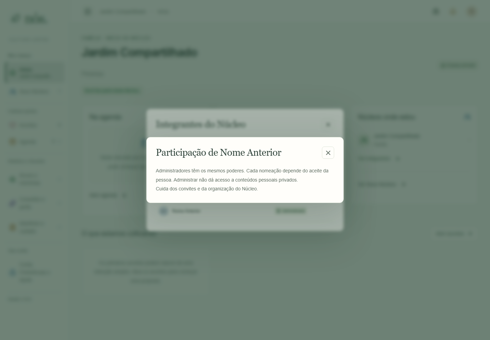

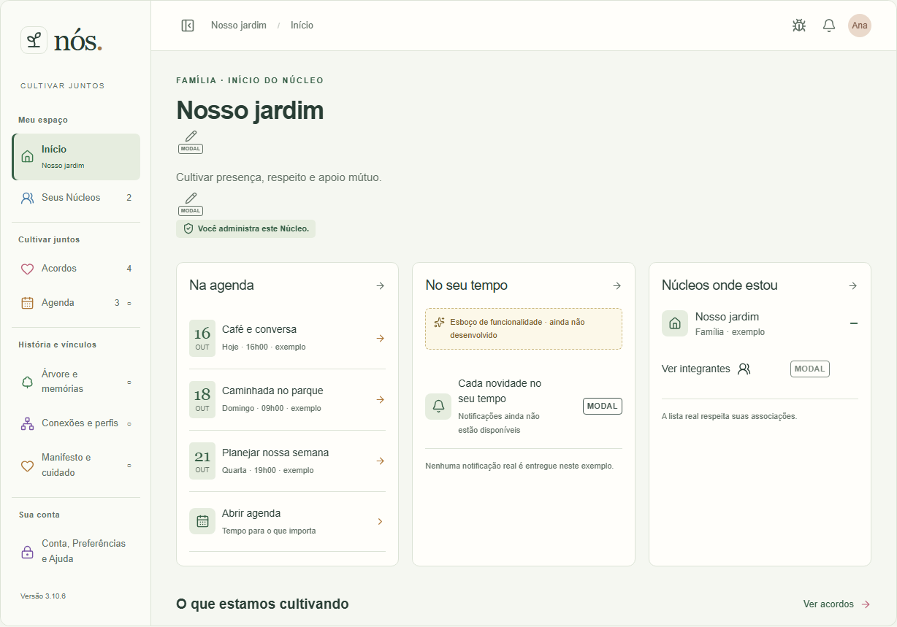
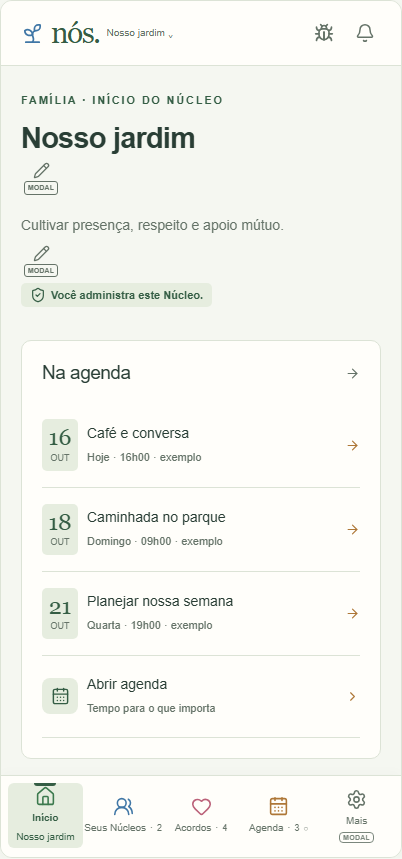
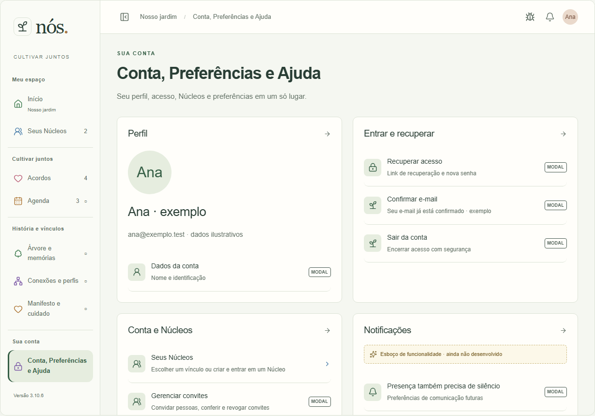

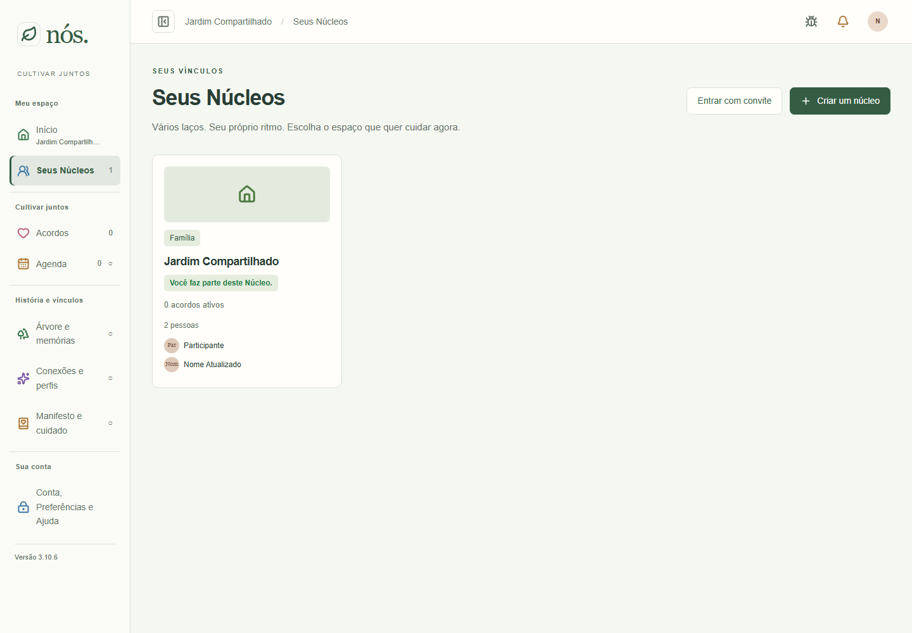
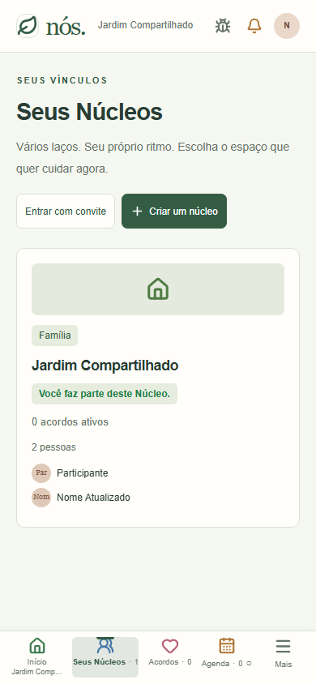

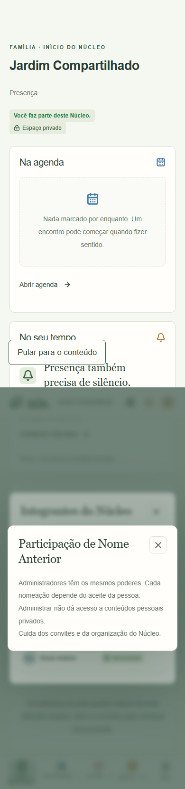
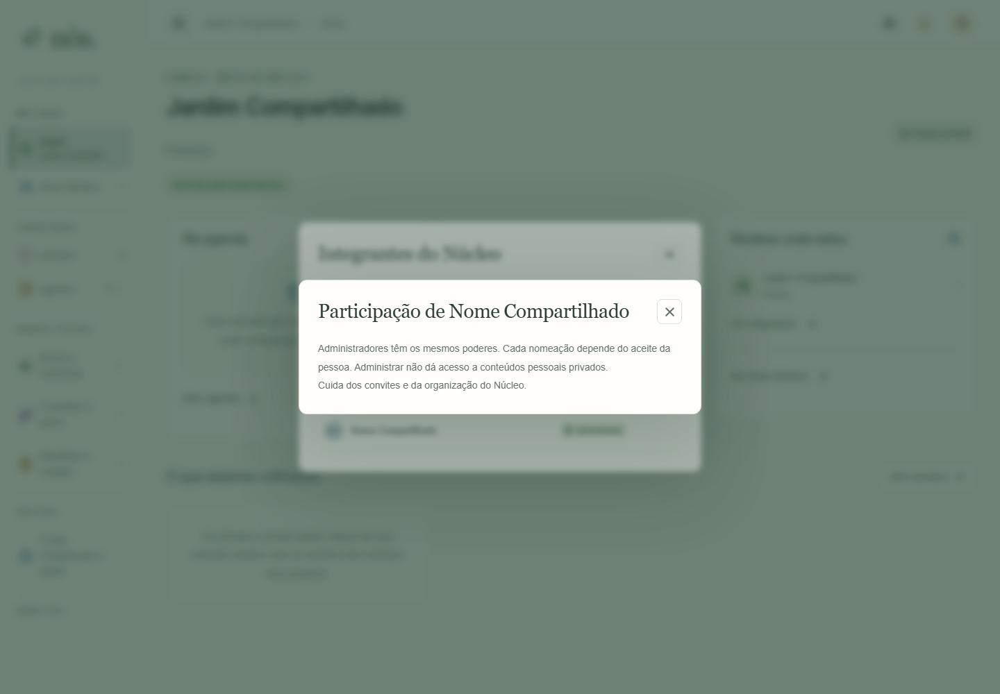
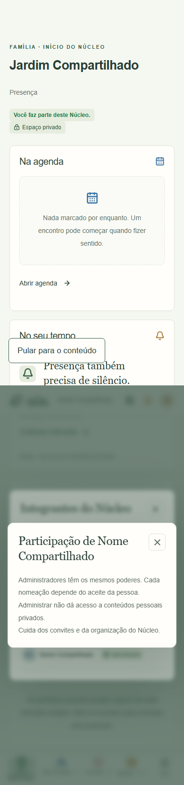
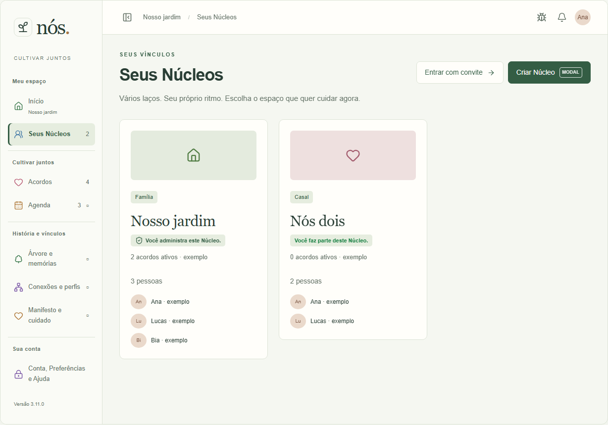


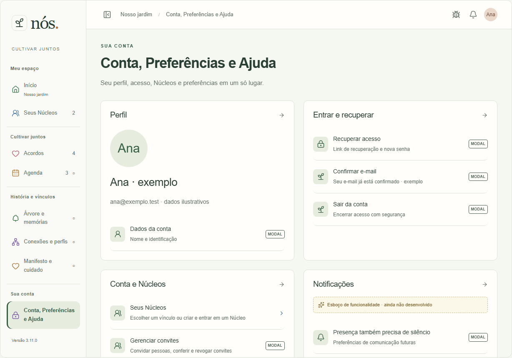
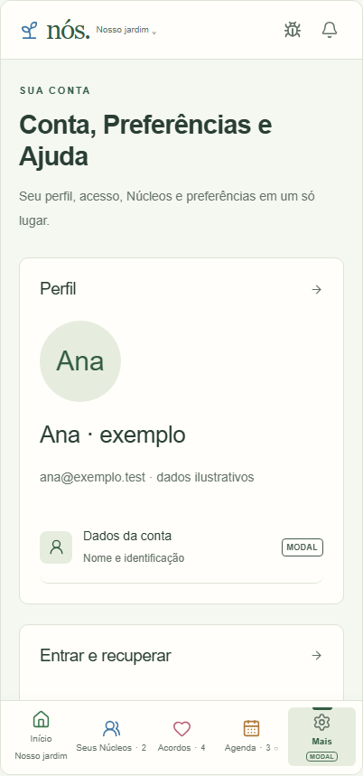
Aplicativo local com contas descartáveis em1440×1000 e390×844, capturas CSS de altura completa. Antes real desktop com detalhes abertos; captura anterior mobile não disponível. Depois-app-13 mostra o estado inicial do teste; depois-app-detalhes mostra nome sincronizado no diálogo já aberto; depois-app-12 mostra o segundo nome na lista após recuperar falha de consulta. Nenhuma recarga integral do documento, comprovada por timeOrigin. Versão visual dos testes3.10.6 antes do incremento final de metadados3.11.0.
Atlas antes/depois12/13/66 usa os recortes próprios. Não há mudança de composição ou novo modal, apenas comportamento de atualização e fichas. Atlas offline não sincroniza contas nem salva nomes no servidor: dados ilustrativos preservados. Aplicativo contém nomes sintéticos de teste. Sem produção, Safari ou aparelho físico; dimensões reais de cada captura nas legendas.











